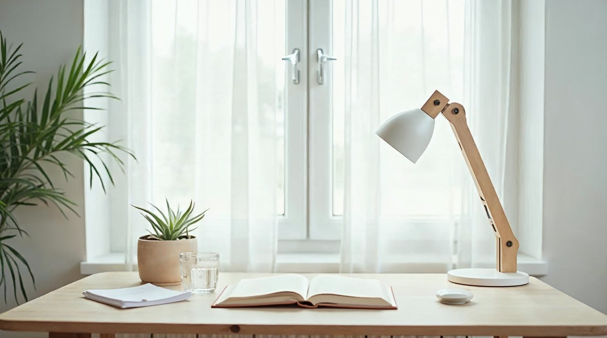
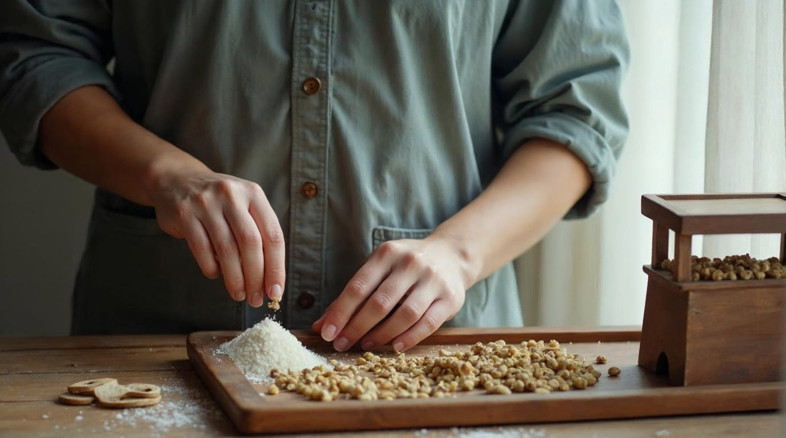
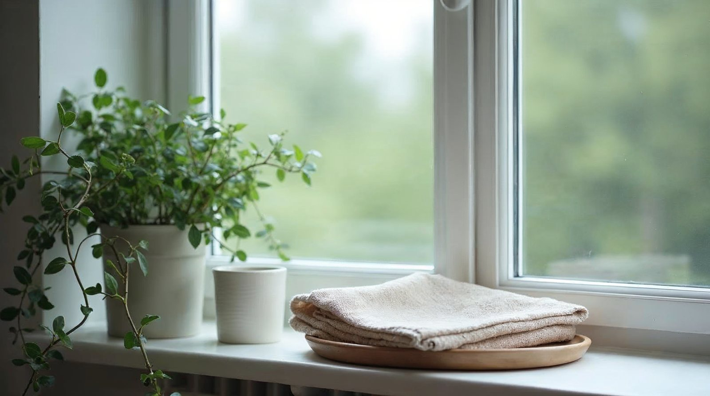

이종호 한의사 감수좋은꿈참사랑한의원 대표원장 (한의사 면허번호 19769)발행 2026-11-24 · 수정 2026-11-26
이 글의 차례
- 왜 이런 불편이 생길 수 있나요
- 화면을 오래 보면 눈은 어떻게 지칠까요?
- 비슷해 보여도 살필 곳이 다른 경우는?
- 먼저 이렇게 여쭙니다
- 상황별 예시
- 스스로 점검해 보세요
- 일상에서 먼저 해 볼 수 있는 것
- 인강 보는 자리, 이렇게 맞춰 보세요
- 쉬는 시간에 눈과 머리는 어떻게 쉬게 하나요?
- 목과 어깨를 풀면 머리가 가벼워지는 건 왜일까요?
- 잠과 눈 피로는 어떻게 이어져 있나요?
- 렌즈와 안경은 어떻게 관리하나요?
- 한의원에서 함께 살필 수 있는 경우
- 하루 화면 사용 계획은 어떻게 세우면 좋을까요?
- 눈이 마를 때 먹고 마시는 것도 상관이 있나요?
- 얼마나 지켜보고 언제 상담할까요
- 다시 오시면 무엇을 이어서 보나요?
- 이렇게 기록해 오시면 상담이 쉬워집니다
- 이런 증상은 먼저 확인이 필요합니다
화면을 볼 때 20분마다 먼 곳을 잠깐 보고 화면 밝기와 거리를 맞추는 것만으로 눈의 피로와 머리 무거움이 덜해지는 경우가 많습니다. 노량진 수험생 중에는 학원 수업 뒤 독서실이나 방에서 인강을 몰아 보는 분이 많아, 밤이 되면 눈이 뻑뻑하고 이마와 관자놀이가 묵직하다는 이야기를 자주 듣습니다.
하루 이틀 쉬면 가라앉는 피로라면 화면 보는 습관부터 바꿔 볼 수 있습니다. 쉬는 날에도 머리가 무겁거나 두통 때문에 공부를 멈추는 날이 늘어난다면, 눈만이 아니라 목·어깨와 잠까지 함께 살펴보시는 것이 좋습니다.
왜 이런 불편이 생길 수 있나요
- 화면에 집중하면 눈을 깜빡이는 횟수가 줄어 눈 표면이 마르기 쉽습니다.
- 가까운 화면을 오래 보면 초점을 맞추는 눈 근육이 계속 긴장해 눈 주변과 머리가 무겁게 느껴질 수 있습니다.
- 고개를 숙이고 화면을 보는 자세는 목 뒤와 어깨를 굳게 해 머리 무거움으로 이어지기도 합니다.
- 늦게까지 화면을 보면 잠드는 시각이 밀려 다음 날 피로가 더 쌓이기 쉽습니다.
- 빠른 배속으로 강의를 보면 화면과 자막을 쫓느라 눈과 머리가 쉬지 못한 채 긴장이 이어지기 쉽습니다.
- 어두운 방에서 밝은 화면만 보면 눈이 밝기 차이에 계속 적응해야 해서 더 쉽게 지치기도 합니다.
- 한의학에서는 눈을 오래 쓰면 몸의 혈이 소모되고, 잠이 부족하면 머리 쪽으로 열이 몰려 눈이 마르고 머리가 무겁다고 보기도 합니다.
화면을 오래 보면 눈은 어떻게 지칠까요?
가까운 화면을 볼 때 눈 안쪽의 작은 근육은 초점을 맞추느라 계속 힘을 주고 있습니다. 쉬어 가며 보면 괜찮지만 몇 시간씩 쉬지 않고 이어지면 이 근육이 풀릴 틈이 없어, 먼 곳을 봐도 초점이 늦게 맞고 눈 안쪽이 뻐근해지기 쉽습니다.
또 화면에 집중하면 눈 깜빡임이 평소의 절반 가까이 줄어든다고 알려져 있습니다. 눈물막이 마르면서 뻑뻑함과 따가움이 생기고, 그 불편을 참으려 눈을 찡그리다 보면 이마와 관자놀이에도 힘이 들어갑니다. 눈과 머리의 피로가 함께 오는 이유입니다.
비슷해 보여도 살필 곳이 다른 경우는?
눈이 피곤하고 머리가 무겁다는 같은 말에도 원인이 몇 갈래로 나뉩니다. 저는 불편한 자리와 시간대, 무엇을 하면 덜해지는지를 나눠 여쭙습니다.
- 눈이 뻑뻑하고 모래가 들어간 것 같으며, 눈을 감거나 인공눈물을 넣으면 잠시 편해진다면 눈 표면이 마른 쪽을 먼저 생각합니다.
- 가까운 글씨가 흐릿하고 화면을 오래 보면 눈 안쪽이 당기며, 안경을 쓴 지 오래됐다면 도수가 지금 눈에 맞는지를 먼저 생각합니다.
- 이마와 뒷머리를 띠로 조이는 듯 묵직하고, 목과 어깨가 함께 굳어 있다면 근육 긴장에서 오는 두통 쪽을 함께 봅니다.
- 한쪽 머리가 욱신거리고 빛과 소리가 거슬리며 속이 메스껍다면 다른 종류의 두통일 수 있어 따로 여쭙습니다.
- 아침부터 머리가 멍하고 오후로 갈수록 집중이 떨어진다면 잠의 양과 질을 먼저 살핍니다.
한 사람에게 두세 가지가 함께 있는 경우가 많습니다. 예를 들어 눈은 뻑뻑하고, 목은 굳어 있고, 잠은 늦게 드는 수험생이라면 세 가지를 하나씩 나눠 줄여 보는 순서를 함께 정합니다.
눈이 마르는 쪽이 두드러진다면 눈이 뻑뻑하고 모래가 들어간 듯 따갑거나 쉽게 피로한 안구건조증은 어떻게 살피나요?도 함께 읽어 보세요.

먼저 이렇게 여쭙니다
- 하루에 화면을 보는 시간이 얼마나 되나요?
- 강의를 빠른 배속으로 보는 편인가요?
- 방이 어두운 상태에서 화면을 보나요?
- 머리가 무거운 느낌은 하루 중 언제 심해지나요?
- 머리가 무거운 곳은 이마, 관자놀이, 뒷머리 중 어디인가요?
- 목과 어깨도 함께 뻐근한가요?
- 잠드는 시각과 일어나는 시각은 어떻게 되나요?
- 안경이나 렌즈를 쓴다면 마지막으로 시력 검사를 받은 것은 언제인가요?
상황별 예시
- 예를 들어 낮에는 학원 수업을 듣고 밤에는 방에서 인강을 두세 시간씩 몰아 보는 수험생의 경우, 자정 무렵이면 눈이 뻑뻑하고 관자놀이가 묵직해질 수 있습니다. 인강을 한 번에 몰아 보기보다 한 강의가 끝날 때마다 화면을 끄고 일어나는 시간을 넣어 볼 수 있습니다.
- 예를 들어 진도를 따라잡으려고 1.8배속 이상으로 강의를 보는 경우, 같은 시간 동안 눈과 머리가 처리해야 할 양이 많아 피로가 빨리 쌓이기 쉽습니다. 어려운 단원은 배속을 낮추고, 복습 단원만 빠르게 보는 식으로 나눠 볼 수 있습니다.
- 예를 들어 침대에 엎드리거나 누워서 태블릿으로 강의를 보는 경우, 화면이 눈에 너무 가깝고 목이 꺾여 있어 눈과 목이 함께 지치기 쉽습니다. 강의는 책상에서 보고, 침대는 잠자는 곳으로 나눠 두는 것부터 권합니다.
스스로 점검해 보세요
- 하루에 화면을 보는 시간이 여덟 시간을 넘는다
- 한 번 화면을 보기 시작하면 한 시간 넘게 눈을 떼지 않는다
- 불을 끄거나 어두운 방에서 화면을 본다
- 강의를 빠른 배속으로 보는 날이 많다
- 머리가 무거울 때 목과 어깨도 함께 굳어 있다
- 자기 직전까지 휴대폰이나 태블릿을 본다
- 렌즈를 끼고 아침부터 밤늦게까지 화면을 보는 날이 일주일에 여러 번이다
세 가지 이상 해당된다면 화면 보는 습관을 먼저 바꿔 보세요. 습관을 바꾼 뒤에도 같은 불편이 이어진다면 진료 때 이 목록을 함께 보며 이야기를 나누면 좋습니다.
일상에서 먼저 해 볼 수 있는 것
- 20분마다 20초 정도 먼 곳 바라보기
- 방 조명을 켜고 화면 밝기 낮추기
- 화면은 팔을 뻗은 거리만큼 떨어뜨리기
- 자기 1시간 전에는 화면 끄기
- 강의는 한 번에 몰아 보지 말고 한 강의마다 5분씩 쉬기
인강 보는 자리, 이렇게 맞춰 보세요
같은 시간을 봐도 화면을 어디에, 어떻게 두느냐에 따라 눈과 머리의 피로가 달라집니다. 공부하는 자리를 한 번 점검해 보세요.
- 화면 윗부분이 눈높이와 같거나 조금 아래에 오도록 두기, 노트북이라면 받침대로 높이기
- 창문이나 조명이 화면에 비치지 않도록 화면 방향 바꾸기
- 글씨가 작아 눈을 찡그리게 된다면 화면 배율을 키우기
- 휴대폰보다 큰 화면으로 강의를 보기
자리를 바꾸고 일주일 정도 지나면 밤의 눈 피로가 어떻게 달라졌는지 비교해 보세요. 차이가 느껴진다면 그 자리를 기준으로 삼고, 독서실이나 스터디카페에서도 비슷하게 맞춰 보시면 좋습니다.
쉬는 시간에 눈과 머리는 어떻게 쉬게 하나요?
강의 사이 쉬는 시간에 휴대폰을 보면 눈은 쉬지 못한 채 화면만 바뀝니다. 짧은 시간이라도 눈을 화면에서 완전히 떼는 것이 핵심입니다.
- 창밖이나 복도 끝처럼 먼 곳을 20초 이상 바라보기
- 눈을 감고 손바닥을 비벼 따뜻하게 한 뒤 눈 위에 가볍게 얹기
- 눈을 천천히 크게 깜빡이기를 열 번쯤 하기
- 일어서서 어깨를 으쓱했다 내리고, 고개를 좌우로 천천히 돌리기
- 물 한 잔 마시고 자리로 돌아오기
눈두덩이를 손가락으로 세게 누르거나 비비는 것은 피하세요. 저녁에 따뜻한 수건을 눈 위에 몇 분 올려 두는 방법도 있지만, 눈이 충혈되고 화끈거릴 때는 따뜻한 찜질보다 쉬는 것을 먼저 권합니다.
목과 어깨를 풀면 머리가 가벼워지는 건 왜일까요?
화면에 집중하면 자기도 모르게 고개가 앞으로 나가고 어깨가 올라갑니다. 머리 무게를 목 뒤 근육이 계속 붙잡고 있게 되어, 그 긴장이 뒷머리와 관자놀이까지 이어져 머리가 무겁게 느껴질 수 있습니다.
그래서 눈만 쉬게 하기보다 목과 어깨도 함께 풀어 주시길 권합니다. 강의 하나가 끝날 때마다 아래 동작을 1~2분만 해 보세요. 모두 아프지 않은 범위에서 천천히 합니다.
- 턱을 뒤로 살짝 당겨 두 턱을 만들듯 5초 버티고 풀기를 다섯 번
- 어깨를 귀 쪽으로 끌어올렸다가 툭 떨어뜨리기를 다섯 번
- 양손 깍지를 끼워 뒷머리에 대고, 손으로 누르지 말고 손 무게만 실어 고개를 천천히 앞으로 숙여 목 뒤 펴기
- 양팔을 뒤로 모아 가슴을 열고 숨을 길게 내쉬기
동작 중에 팔이 저리거나 어지러우면 바로 멈추고 진료 때 알려 주세요.
잠과 눈 피로는 어떻게 이어져 있나요?
눈은 잠자는 동안 쉬고 표면의 눈물막도 회복합니다. 밤늦게까지 화면을 보다 잠이 줄면 다음 날 아침부터 눈이 뻑뻑하고, 오후가 되면 머리가 더 쉽게 무거워지기도 합니다.
게다가 자기 직전까지 밝은 화면을 보면 잠드는 데 시간이 걸리고 잠이 얕아지기 쉽습니다. 그래서 저는 눈 피로로 오신 수험생께 잠드는 시각과 일어나는 시각, 자다가 깨는지를 꼭 여쭙습니다.
- 잠드는 시각을 일정하게 정해 두기
- 자기 1시간 전 화면을 끈 뒤에는 종이 책으로 가볍게 복습하거나 다음 날 계획을 손으로 적기
- 휴대폰은 침대에서 손이 닿지 않는 곳에 두고 알람만 켜 두기
렌즈와 안경은 어떻게 관리하나요?
렌즈를 끼고 하루 종일 화면을 보면 눈 표면이 더 쉽게 마릅니다. 수험 기간처럼 화면을 오래 보는 시기에는 렌즈 끼는 시간을 줄이고, 저녁에는 안경으로 바꿔 끼는 것을 권합니다.
안경을 쓴 지 오래됐거나 최근 들어 칠판 글씨나 화면 글씨가 흐릿하다면 도수가 맞는지 안과나 안경원에서 확인해 보세요. 도수가 맞지 않은 상태에서 눈을 찡그리며 보면 눈 주변과 이마에 힘이 들어가 머리 무거움으로 이어지기 쉽습니다.

한의원에서 함께 살필 수 있는 경우
- 화면을 오래 본 뒤 머리가 무거운 경우 목·어깨 긴장과 잠을 함께 살핍니다.
- 눈이 쉽게 피로하고 잠이 얕은 경우 생활 리듬을 함께 살핍니다.
- 두통이 잦은 경우 언제 어떻게 아픈지 기록과 함께 살핍니다.
좋은꿈참사랑한의원에서는 모든 분께 맥부터 짚으며 불편이 언제, 어떻게 나타나는지 여쭙고, 필요하다고 판단될 때 설진을 더해 몸 상태를 살핍니다. 하루 화면 보는 시간과 공부 시간표, 잠드는 시각도 함께 듣습니다.
그다음 목과 어깨, 뒷머리를 눌러 보며 굳은 자리를 찾고, 고개를 돌리거나 숙일 때 머리 무거움이 달라지는지 확인합니다.
상태에 맞춰 침·약침·한약 상담 등을 정합니다. 한약 상담은 지금 드시는 약과 영양제를 확인한 뒤에 하고, 처방받은 약은 처방한 의사와 상의 없이 줄이거나 끊지 않도록 말씀드립니다. 귀가 전에는 기록해 볼 점과 다음에 확인할 일을 알려 드립니다.
하루 화면 사용 계획은 어떻게 세우면 좋을까요?
수험생에게 화면을 줄이라는 말은 현실적이지 않을 때가 많습니다. 대신 하루 안에서 화면을 보는 시간과 보지 않는 시간을 번갈아 배치하면, 같은 양을 보더라도 눈과 머리가 쉴 틈이 생깁니다.
- 오전에는 머리가 맑을 때 문제 풀이나 필기처럼 종이로 하는 공부를 먼저 하기
- 인강은 오후와 저녁으로 나눠 한 번에 두 강의 이상 몰아 보지 않기
- 인강을 본 뒤에는 바로 다음 강의로 넘어가지 말고 종이 교재로 복습하기
- 휴식 시간과 식사 시간에는 휴대폰 대신 산책이나 대화로 쉬기
- 밤 10시 이후에는 새 강의를 시작하지 않기
예를 들어 하루 인강 네 강의를 들어야 한다면 오후에 두 강의, 저녁에 두 강의로 나누고, 그 사이에 종이 복습을 끼워 넣는 식입니다. 일주일 정도 이렇게 해 보고 밤의 눈 상태가 어떻게 달라졌는지 기록해 두세요.
눈이 마를 때 먹고 마시는 것도 상관이 있나요?
공부에 집중하다 보면 물을 거의 마시지 않고 커피나 에너지 음료로 하루를 버티는 경우가 많습니다. 몸에 수분이 부족하면 눈과 입이 함께 마르기 쉽고, 카페인이 많은 날은 잠도 얕아져 다음 날 눈 피로로 이어지기도 합니다.
물병을 책상 위에 두고 강의 하나가 끝날 때마다 몇 모금씩 마셔 보세요. 커피는 오전에만 마시고, 오후에는 물이나 보리차로 바꾸는 것을 권합니다. 끼니를 거르지 않고 채소와 과일을 조금씩 곁들이는 것도 수험 기간 전체의 컨디션을 지키는 기본입니다.
청소년은 어른보다 카페인 기준이 낮습니다. 마시는 양과 시각은 커피와 에너지 음료로 버티다 밤에 잠이 안 올 때는 어떻게 하나요?를 참고해 주세요.
얼마나 지켜보고 언제 상담할까요
- 화면 거리와 밝기, 쉬는 간격을 바꾼 뒤 1~2주는 밤의 눈 피로와 머리 무거움을 지켜보세요.
- 2~3주가 지나도 같은 정도로 불편하거나, 쉬는 날에도 머리가 무겁다면 상담을 권합니다.
- 두통 때문에 진통제를 먹는 날이 일주일에 여러 번이라면 2~3주를 채우지 말고 일찍 진료를 받아 보세요.
진통제를 자주 먹다 보면 그 자체로 두통이 잦아지는 경우도 있습니다. 약을 줄이는 일은 혼자 정하지 말고 의사와 상의해 주세요. 자세한 이야기는 두통약을 자주 먹을수록 두통이 더 잦아지는 약물과용 두통은 어떻게 살피나요?에 적어 두었습니다.
다시 오시면 무엇을 이어서 보나요?
눈 피로와 머리 무거움은 생활 습관과 함께 오르내리는 경우가 많아, 한 번 보고 끝내기보다 이어서 살피는 것이 중요합니다. 다시 오시면 맥을 다시 짚으며, 지난번에 정한 화면 거리와 쉬는 간격, 잠드는 시각을 해 보니 어땠는지부터 여쭙습니다.
그다음 머리가 무거운 시간대와 위치가 어떻게 바뀌었는지, 목과 어깨의 굳은 자리가 어떤지 다시 눌러 보며 확인합니다. 지키기 어려웠던 부분이 있다면 시간표에 맞게 방법을 바꾸고, 치료 방법도 그 변화를 보며 조정합니다.
시험 일정이 바뀌거나 공부 장소를 옮기는 시기에는 불편이 다시 늘기도 합니다. 그런 변화가 있었다면 진료 때 먼저 알려 주세요.

이렇게 기록해 오시면 상담이 쉬워집니다
- 하루 화면 보는 시간과 강의 배속, 화면과 눈의 거리
- 머리가 무거운 시간대와 위치(이마, 관자놀이, 뒷머리)
- 잠드는 시각과 일어나는 시각
- 안경·렌즈 착용 여부와 마지막 시력 검사 시기
- 두통으로 진통제를 먹은 날과 횟수
- 쉬는 날과 공부하는 날의 머리 무거움 차이
밤늦게까지 화면 앞을 지키는 건 그만큼 해내고 싶은 마음이 크다는 뜻이겠지요. 강의 수를 줄이자는 말씀은 드리지 않겠습니다. 강의와 강의 사이에 눈을 쉬게 할 1분부터 만들어 보세요. 다음에 오시면 머리가 무거워지는 시각이 언제쯤인지부터 여쭙겠습니다.
이런 증상은 먼저 확인이 필요합니다
- 시야가 갑자기 흐려지거나 겹쳐 보이는 경우, 눈이 충혈되며 심하게 아픈 경우
- 평소와 다른 심한 두통이 갑자기 시작된 경우
이런 신호가 있으면 한의원보다 가까운 병원이나 응급실을 먼저 찾으세요.

여쭙는 것
- 하루에 화면을 보는 시간이 얼마나 되나요?
- 강의를 빠른 배속으로 보는 편인가요?
- 방이 어두운 상태에서 화면을 보나요?
생활에서 해 볼 것
- 20분마다 20초 정도 먼 곳 바라보기
- 방 조명을 켜고 화면 밝기 낮추기
- 화면은 팔을 뻗은 거리만큼 떨어뜨리기
한의원에서 함께 살필 것
- 화면을 오래 본 뒤 머리가 무거운 경우 목·어깨 긴장과 잠을 함께 살핍니다.
- 눈이 쉽게 피로하고 잠이 얕은 경우 생활 리듬을 함께 살핍니다.
- 두통이 잦은 경우 언제 어떻게 아픈지 기록과 함께 살핍니다.
먼저 확인이 필요한 신호
- 시야가 갑자기 흐려지거나 겹쳐 보이는 경우, 눈이 충혈되며 심하게 아픈 경우
- 평소와 다른 심한 두통이 갑자기 시작된 경우
한눈에 보는 표
| 구분 | 핵심 |
|---|---|
| 여쭙는 것 | 하루에 화면을 보는 시간이 얼마나 되나요? 강의를 빠른 배속으로 보는 편인가요? |
| 생활에서 해 볼 것 | 20분마다 20초 정도 먼 곳 바라보기 방 조명을 켜고 화면 밝기 낮추기 |
| 한의원에서 함께 살필 것 | 화면을 오래 본 뒤 머리가 무거운 경우 목·어깨 긴장과 잠을 함께 살핍니다. 눈이 쉽게 피로하고 잠이 얕은 경우 생활 리듬을 함께 살핍니다. |
| 먼저 확인이 필요한 신호 | 시야가 갑자기 흐려지거나 겹쳐 보이는 경우, 눈이 충혈되며 심하게 아픈 경우 평소와 다른 심한 두통이 갑자기 시작된 경우 |
자주 묻는 질문
인공눈물을 자주 넣어도 되나요?
눈이 건조할 때 도움이 될 수 있지만, 사용 횟수와 종류는 안과나 약사와 상의하는 것을 권합니다.
블루라이트 안경이 필요할까요?
도움이 된다고 느끼는 분도 있지만, 화면을 보는 시간과 쉬는 간격을 먼저 조절하는 것이 기본입니다.
진료 시간은 어떻게 되나요?
좋은꿈참사랑한의원은 평일 09:30~20:00(점심 13:00~14:00), 토·일·공휴일 09:30~15:00에 진료합니다.
좋은꿈참사랑한의원은 재진 때 지난번 이야기부터 이어서 여쭙니다. 진료시간과 예약은 오시는 길에서 확인하세요.
어디서 상담받을 수 있나요?
좋은꿈참사랑한의원은 서울 동작구 만양로2길 2 신성빌딩 3층·5층(서울 동작구 상도동, 7호선 상도역 3번 출구 근처)에 있습니다. 한의사 3명(이종호 대표원장, 조영기 수석진료원장, 정원영 진료원장)이 진료합니다. 진료시간은 평일 09:30~20:00(점심 13:00~14:00), 토·일·공휴일 09:30~15:00이며, 방문 전 전화로 확인을 권합니다. 예약은 네이버 예약, 카카오톡 상담, 전화 02-815-7510로 받습니다.
이 글은 일반적인 건강 정보이며 개인의 진단이나 치료를 대신하지 않습니다. 증상이 있거나 복용 중인 약이 있다면 진료를 통해 확인하세요. 치료 효과는 개인마다 다를 수 있습니다.
작성 기준: 일반적으로 알려져 있는 건강 정보를 참고해 정리했습니다(대표원장 감수). 증상 기록은 1~2주 동안 하루 1회, 비슷한 시간에 적어 오시면 지난 상태와 비교하기 쉽습니다.